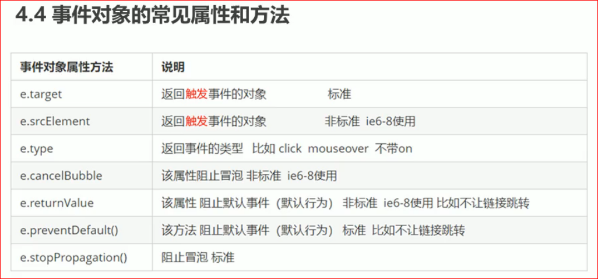

-
this 和 event.target的区别
- this指向的是绑定调用回调函数的对象
- event.target指向的是被点击的对象
-
event.type 返回事件类型
- 通过 event.type 返回事件绑定的类型
-
- event.preventDefault() ie9及以上适用
- window.event.returnValue ie9以下
-
阻止事件冒泡
- event.stopPropagation() ie9及以上
- window.event.cancelBubble = true ie9以下
-
事件委托(代理): 利用冒泡原理, 将事件监听设置在父元素上, 取代在多个子元素上单独设置事件监听器
- 事件委托适用于 父元素中有多个需要绑定回调函数的子元素
- 事件委托的作用: 只需要操作一次DOM, 提高了程序的性能
- 事件委托的核心原理: 给父元素添加监听器, 利用事件冒泡影响每个子元素